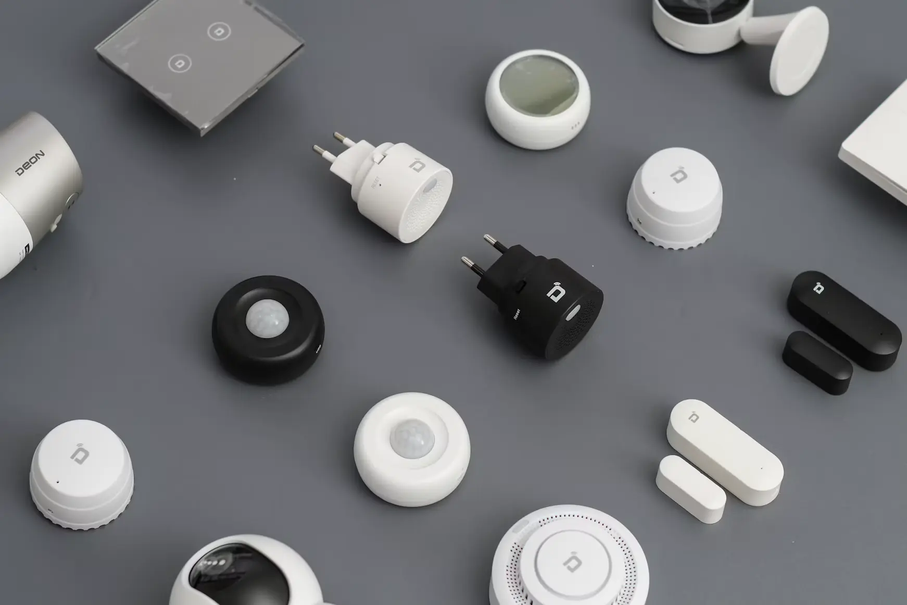

Geschichte
Vom CAT7-Chaos zum Netzwerkschrank
Rückblickend war Anfang 2022 wohl der Moment, in dem der Grundstein für meine berufliche Neuausrichtung gelegt wurde. Gemeinsam mit meiner Frau und zwei Helfern sanierten wir das …

Ein persönlicher Blog von Jan Behr
Hier teile ich mit euch, wie ich mein Zuhause smart mache. Was klappt, was dauert länger und welche Ideen sind mir unterwegs noch gekommen. Es geht um Smart Home, IT-Projekte und alles andere, woran ich grade tüftle.
Das Projekttagebuch
Was ich im eigenen Haus gebaut habe, Schritt für Schritt festgehalten. Größere Projekte schreibe ich zweifach auf: einmal als Geschichte zum Lesen, einmal als Dokumentation zum Nachvollziehen.
Ein Projekt, zwei Blickwinkel: einmal erzählt, wie es dazu kam, einmal nüchtern dokumentiert vom Bohrloch bis zur Fehlersuche.
Geschichte
Rückblickend war Anfang 2022 wohl der Moment, in dem der Grundstein für meine berufliche Neuausrichtung gelegt wurde. Gemeinsam mit meiner Frau und zwei Helfern sanierten wir das …
Dokumentation
Im Rahmen einer Sanierung des Erdgeschosses meines Eigenheims im Jahr 2022 wurden alle Räume des Erd- und Obergeschosses mit Cat7-Netzwerkkabel ausgestattet (insgesamt 16 …
Smart Home
Hier sammle ich, was ich bei Netzwerk, Sensoren und Automationen lerne. Es soll praktisch sein und auch in ein paar Jahren noch verständlich bleiben.
Wie bei vielen SmartHome-Fans begann auch mein Weg mit einem Amazon Echo Dot, einer Philips-Hue-Bridge und den passenden Glühbirnen. Das dürfte etwa 2017 gewesen sein – zu der …
Nachdem das Erdgeschoss saniert war, hielt ich Ausschau nach Problemen, die sich mit SmartHome-Technik lösen ließen. Fündig wurde ich direkt in einem Raum mit gleich mehreren …
„Smarter Vorgarten“ ist ehrlicherweise ein wenig irreführend, denn es geht dabei nicht um einen Garten im klassischen Sinne. Vielmehr dreht sich alles um den Bereich vor der …
Ideen & Gedanken
Manche Ideen passen noch in keinen Bauplan. Ich schreibe sie trotzdem auf. Einige bleiben eine Notiz, andere werden irgendwann ein eigenes Projekt.
Vor ein paar Tagen bin ich auf LinkedIn auf eine Umfrage gestoßen, die genau diese Frage aufgeworfen hat: Würde man sich einen humanoiden Roboter für die Hausarbeit ins Haus …
Nicht alles braucht eine eigene Schublade. Hier landen kleine Themen und Beobachtungen, die sonst nirgends richtig passen.
Über mich
Ich bin Jan Behr. Hier zeige ich meine IT-Projekte und schreibe über alles, was mich rund um das Thema SmartHome und Computertechnik beschäftigt.
Was mich antreibt
Für mich ist IT kein Selbstzweck, sondern ein Werkzeug, um den Alltag – gerade als Familie im eigenen Zuhause – einfacher, sicherer und komfortabler zu machen. Ob Netzwerksegmentierung, Home-Assistant-Integrationen oder die Absicherung smarter Geräte: Ich probiere Dinge selbst aus, dokumentiere meine Erfahrungen und teile hier, was funktioniert hat – und was nicht.
Perspektivisch möchte ich die Inhalte meiner Ausbildung und meine Erfahrungen im SmartHome-Bereich nutzen, um die Vorteile von SmartHome auch in andere Privathaushalte zu bringen und so den Alltag für alle zu erleichtern.
Was Dich und Sie hier erwartet
Ob Sie als Arbeitgeber einen Eindruck von meiner praktischen Herangehensweise und meinem Engagement gewinnen möchten oder Du als technikinteressierte Leserin bzw. technikinteressierter Leser auf der Suche nach Anregungen für Dein eigenes Zuhause bist: Ich freue mich über Dein bzw. Ihr Interesse und lade Dich bzw. Sie ein, durch meine Projekte zu stöbern.
Bei Fragen oder für einen fachlichen Austausch können Sie mich gerne kontaktieren.